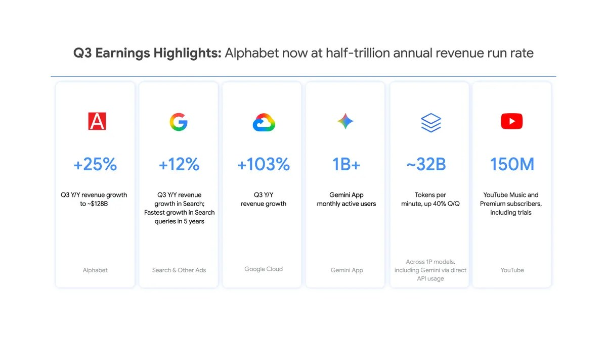

一、导语：故事从一张财报开始转弯
2026 年 10 月 28 日，Alphabet 交出第三季度财报：营收 1276 亿美元，同比 +25%，年化营收首次站上半个万亿美元；Google Cloud 收入 307 亿美元，同比翻了一倍多（+103%）。这是一份放在两年前会被称作「完美」的财报。
市场的回答是：股价单日下跌 12.6%，市值从 3.97 万亿美元掉到 3.46 万亿，一天蒸发超过 5000 亿美元——史上第二大单日市值缩水。同一季度，它的自由现金流是负 90.7 亿美元。
这就是 2026 年 10 月末的分水岭：AI 基建的故事没变，算术变了。过去两年「多花钱」等于「有野心」，现在「多花钱」要先回答一个问题——什么时候赚回来。
二、背景：三万亿美元的承诺是怎么堆起来的
要理解这次下跌，得先把过去 18 个月发生的事摆在一张表上。
彭博社 10 月 31 日的统计显示，Alphabet、Meta、微软、亚马逊、甲骨文五家公司为数据中心、芯片、电力签下的长期投入承诺已经超过 3 万亿美元。拆开看更惊人：Google 的承诺超过 1 万亿美元，接近一年前的八倍；Meta 超过 8000 亿，其中接近一半是分 30 年支付的租约；甲骨文则是第一家因为建 AI 数据中心而自由现金流转负的大型科技公司，按自己的说法要到 2028 年才转正。
另一条线上，今年的现金流支出同样在刷新纪录：Alphabet、亚马逊、Meta、微软四家 2026 年计划资本开支合计超过 7400 亿美元。亚马逊 CEO Andy Jassy 在财报电话会上说，2026 年现金资本开支约 2200 亿美元，大部分投向 AWS，2027 年还会「大幅增加」。
这些钱不是花在营销或并购上，而是变成了混凝土、变压器、光纤和 GPU。它们一旦开工就很难刹车——这既是巨头们敢承诺的原因，也是投资者开始紧张的原因。
三、核心内容：财报里的三个数字，市场只看了最后一个
Alphabet 这份财报本身并不难看，难看的是结构。
| 指标 | 2026 Q3 | 同比 |
|---|---|---|
| 总营收 | 1276 亿美元 | +25% |
| Search & other 广告 | 633.5 亿美元 | +12% |
| Google Cloud | 307 亿美元 | +103% |
| 经营利润 | 391.6 亿美元 | +30%（利润率 31.8%） |
| 资本开支 | 513.6 亿美元 | 低于分析师预期 550.9 亿 |
| 自由现金流 | -90.7 亿美元 | 转负 |
三个数字里，前两个是「AI 有效」的证据：Gemini App 月活破 10 亿，一方模型 API 每分钟处理约 320 亿 tokens、环比 +40%、同比四倍；AI Mode 月活约 10 亿，AI Mode 里的查询平均长度是传统搜索的三倍，全球每月视觉搜索超过 500 亿次。搜索收入还在涨 12%，说明「AI 会杀死搜索广告」暂时没发生。
但第三个数字盖过了前两个：自由现金流为负。同时公司维持 2026 年 1950~2050 亿美元的资本开支指引不变，只补了一句「2027 年将显著增加」。对多头，这是「继续投入」；对空头，这是「看不到尽头」。

为什么「花的比预期少」也算利空
这里有个反直觉的细节：Alphabet 本季资本开支 513.6 亿美元，其实低于分析师预期的 550.9 亿。按旧逻辑，省钱是好事；这一次它被读成了「算力上线速度跟不上需求」。Pichai 在电话会上的原话是「我们正在努力把更多产能上线，以满足长期需求」——需求不是问题，交付才是。
于是市场面对的是一个两难叙事：花得多，现金流难看；花得少，增长天花板提前。两头都不讨好，这在过去十年的科技股里很少见。
四、各方反应：从「奖励投入」到「先看回报」
投资者的态度转得比财报快。TechCrunch 的判断是，市场情绪已经从「奖励大额投入」切换为「担忧负自由现金流、债务攀升与回报不确定」。同一周，Google 与 Reddit 同日大跌——Platformer 的 Casey Newton 把这个组合称为「开放网络被 AI 变现困境同时击中」：Reddit 依赖 Google 的搜索流量，Google 自己则承认 AI Mode 的变现能力低于传统搜索。
“AI Mode 的用户规模已经很大，但它的变现效率还没有追上传统搜索的蓝色链接。”
更值得注意的是债务那一侧。Anthropic 提交的 IPO 招股文件显示，公司计划在服务器、建筑和电力上投入接近 9000 亿美元；资产负债表上是 1175 亿美元负债对 1120 亿美元现金，而数据中心、电力和 GPU 的采购协议大多在表外。一家还没盈利的模型公司背着这样的长约去上市，等于把「AI 基建是不是泡沫」这个问题直接摆到了公开市场面前。
巨头的说法则保持乐观。Jassy 说 AWS 在未来五到十年可以做成万亿美元营收的业务；甲骨文给自己定的转正时间是 2028 年。这些话在 2025 年是加分项，在 2026 年 10 月只换来更长的沉默。
五、深度解读：真正被定价的不是 AI，是折旧
把这几件事串起来，会发现争论的焦点其实不是「AI 有没有用」——用量数据几乎是全线爆发的。焦点是这笔投入的会计寿命。
GPU 的折旧周期通常按 5~6 年算，但模型每 6~9 个月换一代。如果算力真的像电力一样成为基础设施，那么今天买的卡在三年后仍然可以跑推理；如果模型架构发生跃迁，这些卡就会变成昂贵的废铁。三万亿美元的承诺，本质上是对「未来五年 AI 需求曲线」的一次押注，而这个曲线目前只有卖方模型在画。
第二个被定价的是融资结构。Meta 那 8000 亿里有近一半是 30 年租约，甲骨文靠债务建楼，Anthropic 靠表外采购协议——这意味着风险已经不在科技公司的资产负债表上，而是通过租赁公司、私募信贷和债市，扩散到了更广的金融体系。科技股的下跌之所以能带动大盘，原因就在这里。
第三个被定价的是变现节奏。AI Mode 有 10 亿用户，但单位流量的广告价值低于传统搜索；Cloud 增长 103%，代价是毛利被算力成本压住。这两件事合起来说明：AI 的收入曲线是线性的，成本曲线是阶梯的——每一次扩容都要先付钱，收入在后面慢慢追。
所以这不像是 2000 年的那次泡沫重演。那时候是「没有收入也没有产品」，现在是「有收入、有产品、有真实需求，但现金流被前置的资本开支吃掉」。区别很重要：前者会崩，后者会震荡——直到某一季的自由现金流转正，或者直到某家公司先撑不住。
六、总结
一句话：3 万亿美元的承诺和 5000 亿美元的蒸发，说的是同一件事——AI 基建从「信仰股」变成了「要交作业的股票」。接下来 12 个月，决定估值的不再是谁买的卡多，而是谁先把负现金流改回正号。